Open every day 12–9★Daily tastings — bottles 15% off★Free Park Slope delivery★600+ curated bottles★Open every day 12–9★Daily tastings — bottles 15% off★Free Park Slope delivery★600+ curated bottles★
Ask at the counterThe reserve bottles live behind the till, and we like talking about them.
The Reserve List
Bottles worth the wait
The cellar selection — 32 rare and age-worthy finds, hand-picked and honestly
described. Vintage Champagne, mountain Cabernet, Burgundy, Barolo and a few sweet things worth saving.
From $64 to $450.
32Bottles on the list
9Countries
$64–$450Price range
21Critically rated
Sparkling
Sparkling 3 bottles
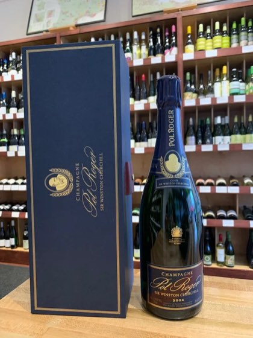
Sparkling
Pol Roger Cuvee Sir Winston Churchill 2018
Champagne, France
Created as a tribute to Sir Winston Churchill, this Pinot Noir and Chardonnay blend honors the qualities he sought most in his champagne: full-bodied, structured, and robust. While the exact blend is a closely guarded family secret, the Pinot Noir dominance provides firmness and breadth, while the Chardonnay contributes elegance and subtlety. The nose is rich with aromas of white flowers, citrus and dried apricot mingled with sweet spices. On the palate brown butter, pastry, candied tangerine peel, red currant, walnut, and savory oyster shell reign supreme. Despite the wine’s youth, it shows smoky weight and a broad shouldered richness. Drink now or over the next 20 years. 96 - Jeb Dunnuck 96 - Vinous 96 - James Suckling 95 - Decanter 94 - Robert Parker’s Wine Advocate
Pairs with Caviar, smoked salmon, foie gras.
Reserve List97 · Wine SpectatorOnly 1 left
$425
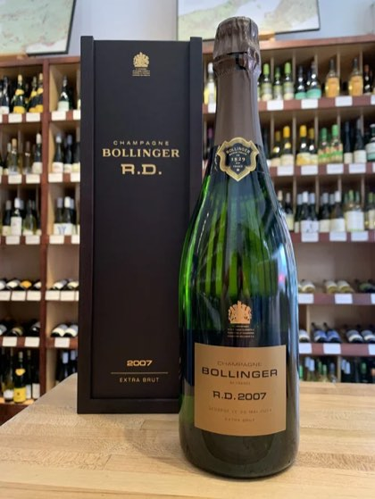
Sparkling
Bollinger R.D. Extra Brut Champagne 2007
Sparkling, France
The R.D. (récemment dégorgé “recently disgorged”) vintage bottling from Bollinger is described as “bold” and “vibrant”. With only 3 grams of sugar as dosage this Champagne is truly extra brut. Incredible aromatic intensity combined with exemplary freshness make this blend of 70% Pinot Noir and 30% Chardonnay truly something to behold. The wine is sold just a few months after being disgorged, which only adds to the fresh character of the bottling. That said, while this is a stunning example of vintage Champagne now it will surely age effortlessly in the cellar for years to come. Notes of ginger, cumin, honey, and brioche on the nose precede a palate of dried apricot, orchard fruit, white plum, orange oil, hazelnut, and exotic spice. Aged 6 months in barrel and 14 years(!) in bottle on the lees. A wine of incredible tension. 97 - Vinous 97 - James Suckling 96 - Wine Spectator
Reserve List97 · VinousOnly 1 left
$325
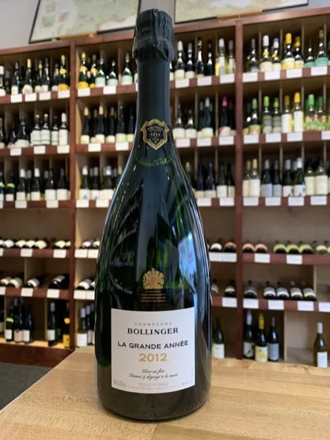
Sparkling
Bollinger Cuvee La Grande Annee 2014
Champagne, France
This stunning prestige cuveé from Bollinger is comprised of two-thirds Pinot Noir and one-third Chardonnay from Premier and Grand Cru vineyards. The wine ferments entirely in old oak (some 40 year old barrels) and represents the richer style of vintage bubbles. Honey, cinnamon, fresh pastry, orange peel, apricot, round citrus, and almond all dance effortlessly on the palate. The individually riddled bottles spend a full seven years on the lees. This wine was sipped by James Bond himself in Casino Royale.
Pairs with Scallops, grilled oysters, French hen of the woods mushrooms
Reserve ListSustainable97 · Wine SpectatorOnly 2 left
$250
White
White 7 bottles
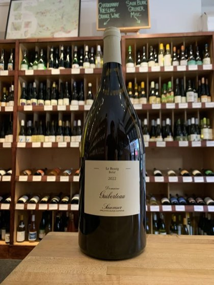
White · 1.5L
Guiberteau Le Bourg Breze 1.5L 2022
Loire Valley, France
One of the great Loire whites from the steep hill of Breze in Saumur with vines nearly 100 years old planted on chalk and limestone soils. Romain Guiberteau makes dry Chenin of “punk rock violence, yet of Bach-like logic and profoundness,” according to importer Becky Wasserman. This Chenin is taut with exceptional tension and texture after being aged in neutral oak for a year. Notes of beeswax, smoky citrus, pear, wet stone, honeycomb, and nutmeg are supercharged in the glass with incredible acidity and a long, lingering mineral finish. Patience will be rewarded with this one as it locks in to a more mature character. Pair with chicken liver mousse, Peking duck, or Thai chili spot prawns. Organic farming.
OrganicReserve ListOnly 1 left
$160
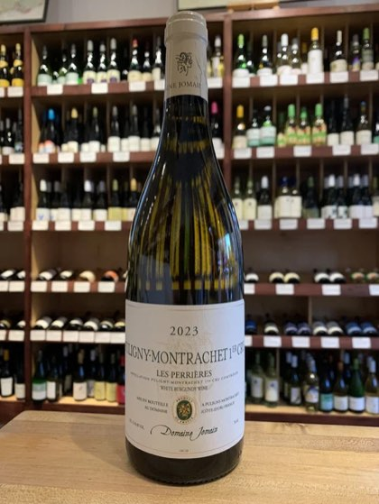
White
Domaine Jomain Puligny Montrachet Les Perrieres 1er Cru 2023
Burgundy, France
Young, fresh, oaked Chardonnay from brothers Philippe and Christophe. White flowers, lemon curd, peach, and lime blossom with lots of concentration and length on the palate. Aged in a combination of neutral and new oak (no more than 25% new). Extended contact and stirring of the lees (yeast) leads to a fuller body and texture. Excellent structure and acidity. The family’s parcel of Perrieres is east facing and planted on limestone. Pair with crab cakes, halibut in creamy her sauce, or veal cutlet Milanese.
Reserve ListOnly 1 left
$130
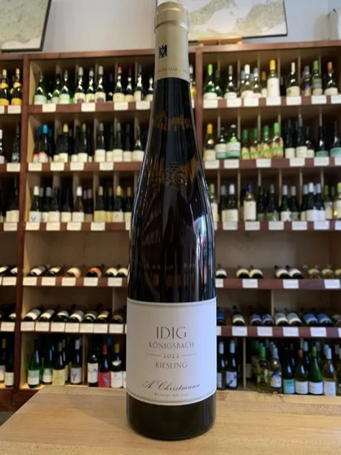
White
A Christmann Idig Konigsbach Riesling Grosses Gewachs 2022
Pfalz, Germany
This vineyard is the crown jewel of the Christmann estate holdings and lies on the steep southeastern facing limestone soils of Pfalz. This is a young wine and will reward patience. In 2026 and beyond you can expect this wine to pour a golden yellow color in the glass with an intense nose of marine salt, lime, underripe tropical fruit, and acacia. It is vibrant, dense, and powerful and will handsomely reward your restraint. Pure, precise Riesling that will likely rank among the best white wines of its vintage. The hardest part of owning this wine is keeping your hands off while it ages. If drinking now decant a full day early.
Reserve ListSustainable95 · Wine AdvocateOnly 1 left
$105
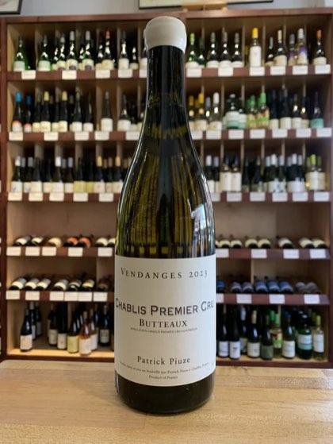
White
Patrick Piuze Butteaux 1er Cru Chablis 2023
Premier cru, France
We’re not shy about our love for Patrick Piuze as the Montreal native consistently impresses with his thoughtful and precise Chablis offerings. This bottling from the 75 year-old-vines in the Premier Cru of Butteaux displays incredible depth, length, purity, and finesse. Butteaux is a sub climate of Montmains and typically showcases the richer side of Chablis. The left bank of the Serein River is known for its Kimmeridgian clay soils, which impart a recognizable minerality of seashells and salinity. This age worthy offering displays notes of white flowers, lemon curd, citrus confit, green apple, peach, and toasty richness. Lots of acidity and tension provide great cut to this medium bodied and mouthwatering Chardonnay.
Pairs with Dungeness crab, butter poached seabass, scalloped potatoes with root vegetables
Reserve List93 · Wine AdvocateOnly 3 left
$90
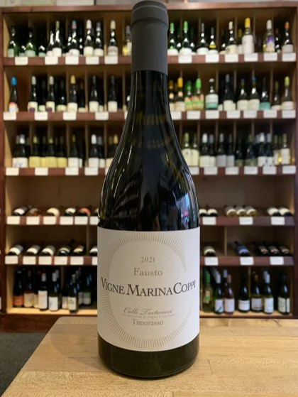
White
Marina Coppi Fausto Timorasso 2021
Piedmont, Italy
Talk about a wine full of character and complexity! This estate was founded in 2003 and Fausto, for who the wine is named, is the grandfather of winemaker Francesco Bellocchio. The rare Timorasso is the hallmark of this estate and it shines in the deft hands of this winemaker. It has the soul of a red in the body of a white. Waxy, deep, and long on the palate with incredible structure and stuffing. It is bright and brimming with stone fruit, peaches, pear, and vanilla with vibrant acids, incredible weight, and wonderful length on the mineral finish. All stainless steel fermentation and aging. An ageworthy offering that whispers sweet everythings to your palate.
A superb Mosel vintage managed by the deft hands of Dr. Katharina Prum. Really harmonious, elegant, and balanced with clean notes of green apple, white peach, smoky grapefruit, pear, white plum, lime, and petrol. From the famed, steep Wehlener Sonnenuhr (Virgin Sundial) vineyard. While this wine shows generously on “pop and pour” it is layered and complex on day two and three of being open and will age effortlessly in a cellar for years if not decades to come. While there is some residual sugar in this wine it is exquisitely balanced with fresh acidity and the sweetness is never cloying. One of the top producers in the region and one of the best vintages of the decade. Impressive stuff. 94 - Vinous 92 - Wine Enthusiast
Reserve List94 · VinousOnly 6 left
$78
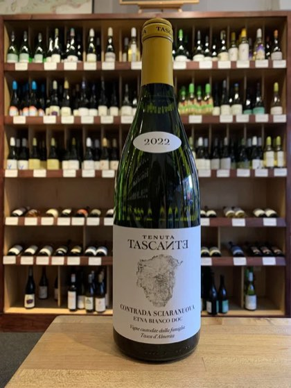
White
Tenuta Tascante Sciaranuova Etna Bianco 2022
Mount Etna, Italy
This is an exceptional bottle of wine from a region that is really heating up. 100% Carricante from the Sciaranuova contrada on the north slopes of Mount Etna. Elegant and brimming with sliced apple, lemon peel, white peach, white pepper, flint, and a dense streak of smoky minerality imparted by these gravel rich volcanic soils (former lava flows). Grown at 730 meters of altitude and aged in large Slavonian oak barrels for one year. Put this up against any premier cru Chablis or Burgundy and be amazed. Drink or hold. Extremely limited cellar selection. Sustainable farming.
Reserve ListSustainableOnly 4 left
$65
Red
Red 17 bottles
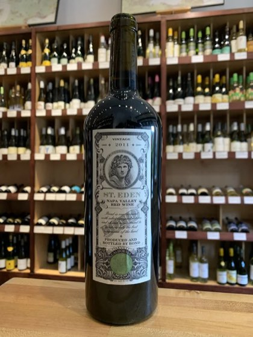
Red
Bond St. Eden 2011
Meritage, United States
A little piece of Napa winemaking history right here. The St. Eden bottling from Bond is from an 11-acre estate situated on a rocky knoll in stunning Oakville. Bill Harlan has crafted a beauty from this much maligned vintage and it is drinking at peak form with life still ahead. This Cabernet dominant, meritage blend is both opulent and focused with creme de cassis, dark chocolate, eucalyptus, mint, and crushed gravel. The palate is broad and lush with fine grained tannin and a texture that is royal and elegant. Whether celebrating a special occasion or YOLO’ing on a midweek splurge this outstanding wine is sure to impress the palates of anyone that gets the opportunity to taste it.
Reserve List95 · Wine AdvocateOnly 2 left
$450
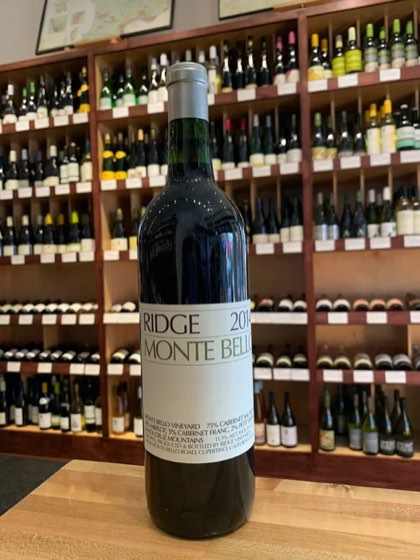
Red
Ridge Monte Bello 2019
Santa Cruz Mountains, California
JamesSuckling.com: 99 Points “This is a very powerful Monte Bello with currants and blackberry, black licorice and smoked meat. Mint. Some sesame seed, too. It’s full-bodied with incredible darkness and saltiness like volcanic salt. Umami. Grilled seaweed. Flavorful and captivating. It goes on for minutes. Try after 2025, but this may age forever.” -James Suckling (November 2022) Vinous Media: 98 Points “The 2019 Monte Bello is a wild, exotic wine. Huge, soaring aromatics meld into a core of heady, exotically ripe fruit. Not a shy wine by any means, the 2019 is atypically opulent, and yet all of the classic Monte Bello structure is there, underneath all of that fruit. The 2019 needs time in bottle to shed its baby fat, but there is a lot to look forward to. I imagine it will always be a pretty exuberant wine. Inky red fruit, blood orange, espresso, sweet American oak, cedar and pipe tobacco leave a lasting impression. In a word: magnificent!” -Antonio Galloni (May 2022) Decanter: 98 Points “Opens with soaring red raspberry and vivid cassis flavours. Even more precise and pure-tasting than its brother, the Estate Cabernet, Monte Bello has exquisite choreography and building on the palate. Still terribly young, has an immense structure. With time, its finish will no doubt lengthen if one can endure the agony of waiting. This is the wine that has established Ridge as a California ‘First Growth’. Because of the vineyard’s cool mountain site exposed to the Pacific, Monte Bello always has a dramatic freshness—drinking it, you feel as though you’re in the mountains yourself. The first Monte Bello vines were planted in 1886, but the vineyard fell into near ruin during and post-Prohibition. A mere 3.25ha (eight acres) were replanted in 1949 and were the source of the first Monte Bello in 1962. Since then, other historic blocks have also been replanted. The 2019 is 82% Cabernet Sauvignon, 9% Merlot, 8% Petit Verdot and 1% Cabernet Franc.” -Karen MacNeil (November 2022) Forbes: 98 Points “This incredibly complex wine is produced at the legendary Monte Bello vineyard high on top of a limestone ridge overlooking Silicon Valley. Only the very best organic grapes go into the Monte Bello bottles each year, with barrel samples carefully tasted and evaluated by a team of winemakers, and still overseen by 86-year old Chairman, Paul Draper. With a nose of red currant, anise, tobacco leaf, and a hint of rosemary, it expresses blackberry, smoked meat, herbs, and earthy umami flavors on the palate. Incredibly complex, it has bold chewy tannins, great concentration, vibrant acidity, and outstanding length. Though probably not ready to drink for a few more years, it is still mesmerizing now.” -Dr. Liz Thach, MW (December 2022) Robert Parker Wine Advocate: 97 Points “Medium ruby in color, the 2019 Monte Bello is bursting with pure, expressive perfume! Red and black currants are layered with wafts of rose petals, charcuterie, fresh thyme and tobacco, graphite, vanilla and cedar. Medium-bodied, it’s the definition of weightless intensity, with concentrated layers of floral perfume and spice, a silky, mouthwatering frame, and a very long, ethereal finish that calls you back to the glass for another sip. Delicate, complex and very easy to drink, it’s an especially elegant expression of Monte Bello!” -Erin Brooks (March 2023) Robert Parker Wine Advocate: 97 Points “The 2019 Monte Bello includes 9% Merlot, 8% Petit Verdot and 1% Cabernet Franc. It has a poised, graceful nose of fresh sage and lilac with savory, meaty aromas in the background. The palate is medium-bodied but with admirable stuffing and concentration, leading to a springboard finish of pencil lead, gravel and pleasing, refreshing acidity. The standard élevage in new American oak is still years away from fully integrating, as evidenced in the herbal, upright but pleasant posture of the finish. This is a confidently elegant, high-toned iteration of this iconic wine that should drink and develop beautifully over the next three decades.” -Matthew Luczy (April 2024) OwenBargreen.com: 97 Points “A masterpiece by the Ridge winemaking team, the 2019 ‘Monte Bello’ is a blend of 82% Cabernet Sauvignon, 9% Merlot and 8% Petit Verdot with a splash of Cabernet Franc. Blending for this wine took place on February 5-6 as twenty-eight lots were blind tasted and scored prior to crafting the final blend. This really needs an hour or two in the decanter prior to enjoying, as it is very tightly-wound like most new release Monte Bellos. Once aroused this shows incredible nuance aromatically from wintergreen and dried herbs to cassis and creme de violette notes, with scorched earth undertones. The palate is very fresh and vibrant with a seamless texture and wonderful length. Try not to touch this beauty for at least two more years, as this has both the weight and finesse to cellar well past two decades. Drink 2024-2045.” -Owen Bargreen (June 2022) Wine Enthusiast: 96 Points + Cellar Selection “Rich and smoky on the nose, this famed estate Cabernet Sauvignon, which is enhanced with 9% Merlot, 8% Petit Verdot and 1% Cabernet Franc, offers aromas of roasted plum, mesquite, sandalwood and frankincense on the nose. Impressively polished tannins consume the palate, where roasted berry, black plum and toasted coffee flavors linger long. Drink now–2039” -Matt Kettmann (September 2022) Wilfred Wong: 96 Points “Generous berries, complementary oak; well balanced; intense; plenty to like here; lasting finish.” (September 2022) Wine Spectator: 95 Points “This has a densely packed core of vivid red and black currant and mulberry fruit, which is encased for now in a mix of charcoal, cast iron, singed mesquite and apple wood. Shows terrific drive, though, and everything is in proportion, with an echo of violet hinting at some inner purity. This will just need time to unwind. Cabernet Sauvignon, Merlot, Petit Verdot and Cabernet Franc. Best from 2024 through 2040.” -James Molesworth (September 2022) JebDunnuck.com: 95 Points “The 2019 Cabernet Sauvignon Monte Bello is a more Cabernet Sauvignon-dominated blend of 82% Cabernet Sauvignon, 9% Merlot, 8% Petit Verdot, and the balance Cabernet Franc, all hitting 13.7% alcohol. As usual, it was aged in new American oak. It shows the higher Cabernet component and is deep purple-hued and tight and closed, with a primordial vibe to its dark blue and black fruit, smoked tobacco, vanilla bean, graphite, and cedarwood aromatics. Medium to full-bodied on the palate, it has terrific overall balance, building, ripe tannins, a good sense of freshness, and outstanding length. It reminds me slightly of the 2018 with its more elegant, streamlined profile, but I expect this to build with bottle age, and it should have 2-3 decades of overall longevity.” -Jeb Dunnuck (August 2022) The Fine Wine Review: 95+ Points “Ridge’s flagship Monte Bello historically has borne comparison to two Bordeaux first growths, Haut-Brion and Latour; that most certainly is the case with the 2019 vintage. The hot bricks aromas characteristic of Haut-Brion are here, and they are supplemented by slight herbal notes. The mouth shows intense cassis fruit with a noble austerity of texture and structure brought about by plenty of tannin and acid — and thus evoking the comparison with Latour. This vintage has a significantly higher percentage of Cabernet Sauvignon than usual at 82% (along with 9% Merlot, 8% Petit Verdot, and 1% Cabernet Franc), thus making the Latour comparison even stronger. Some will enjoy drinking the wine already for the ebullience of its fruit, but for maximum pleasure, I’d wait at least a decade.” -Claude Kolm (July 2022) JancisRobinson.com: 18 “Shaded garnet with a blackish tinge. Relatively mineral nose – less emphatic than the 2020. High toned and ethereal. Herbal notes and real lift. Very much sui generis. Not remotely like a red bordeaux and so much drier than any California Cabernet from further north. Very aromatic. This may be relatively more approachable than the 2020. In all, a lighter-weight Monte Bello than many. Very refreshing, lingering finish with, again, a stony, mineral impression.” -Jancis Robinson (March 2024)
Reserve List99 · James SucklingOnly 3 left
$300
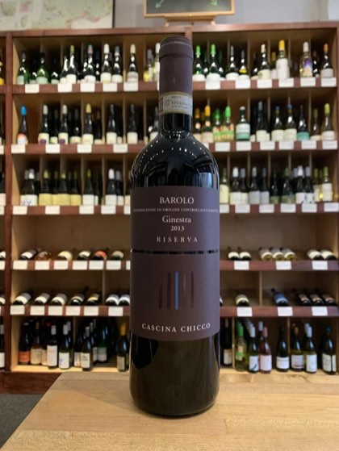
Red
Cascina Chicco Ginestra Barolo Riserva 2013
Nebbiolo, Italy
Ginestra is in the municipality of Monforte d’Alba and is known for great vineyards that produce Barolo of superior excellence. This is 100% Nebbiolo planted on clay soils with southwest sun exposure. The wine ferments for 15 days followed by an additional 45 days of maceration before aging in oak for 40+ months. Cascina Chicco traditionally ages this wine a whopping seven years before release. Displaying a gorgeous ruby with traces of garnet in the glass the wine is elegant and enticing with a bouquet of violet petals, leather, sage, and small red berries. The palate is juicy, balanced, and lithe with notes of mint chocolate, black cherry, pomegranate, macerated raspberry, orange zest, truffle, cigar box, star anise, and vanilla. Only 3,000 bottles made. One for the long haul, drink through 2040.
Reserve ListOnly 4 left
$185
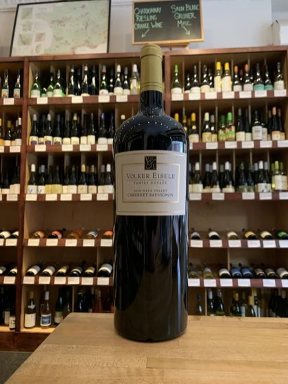
Red · 1.5L
Volker Eisele Estate Napa Valley Cabernet Sauvignon 1.5L Magnum 2016
Chiles District, United States
The Eisele Family has now been farming in the Chiles Valley District of Napa Valley since 1974. This is classic and traditional Napa Valley from a cooler and higher elevation site. Comprised of 75% Cabernet Sauvignon and 25% Merlot, this is deep and generous with black plum, cassis, blueberry, and boysenberry with baking spice coming through on the finish from 22 months in 50% new French oak barrel. A perfect match for burgers, brats, and steaks. There is no doubt you’ll be a hit at the BBQ when you walk through the door with this. Organic farming. 93 - James Suckling 93 - Wine Enthusiast 92 - Decanter
OrganicReserve List93 · James SucklingOnly 1 left
$155
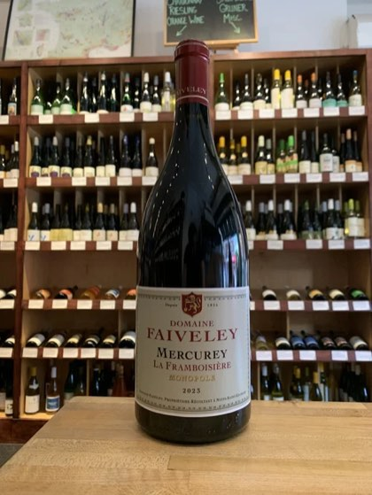
Red · 1.5L
Domaine Faiveley Mercurey Framboisiere 1.5L Magnum 2023
Burgundy, France
From a plot Domaine Faiveley has owned since 1933, the Framboisiere is named after the raspberry bushes that line the property. This is flamboyant, fleshy, and sappy Pinot Noir with effusive red fruited flavors of strawberry, raspberry, and clove spice. Fermented with 25% whole cluster fermentation in 20% new oak for just over a year. This is a killer wine that is an absolute pleasure to drink year in and year out. While it is drinking well now it will age gracefully for a decade or more. Pop this bad boy with Thanksgiving dinner, Christmas ham, wild mushroom risotto, or coq au vin. Organic farming.
Fred Magnien is a fifth generation native of Morey-Saint-Denis and despite being a negociant he works diligently with his growing team to ensure only the highest quality fruit reaches the bottle. These are wines of place, soul, and power. The fruit from this bottling comes from vines that border grand crus Clos de Tart and Bonnes Mares. This is a fuller, riper Pinot Noir that exudes notes of wild red cherries, black berries, perfumed rose petal, mushroom, black tea leaves, and a fantastic earthy musk. Native yeast fermentation, unfined and unfiltered. Aged in clay amphorae and 35% in neutral oak barrel. Organic and biodynamic. Drink through 2035. Proprietor’s pick.
BiodynamicOrganicReserve ListOnly 3 left
$140
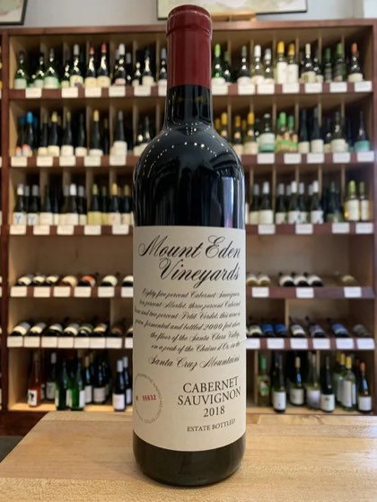
Red
Mount Eden Estate Cabernet Sauvignon 2018
Santa Cruz Mountains, United States
Another Santa Cruz Mountains favorite of ours! Unlike valley fruit, mountain fruit presents more tertiary complexity and less of the overt fruitiness and booziness of many of the California Cabernets from lower elevations. This structure also supports substantial age ability for this beautiful Mount Eden Cabernet. The palate brims with black currant, cherry, plum, blackberry, brown sugar, and baking spice. The long finish shows off the herbal sage and mint notes expressed by this defined Cabernet. 85% Cabernet Sauvignon, 10% Merlot, 3% Cabernet Franc, and 2% Petit Verdot. Native yeast fermentation before two years aging new and used French and American oak barrels. Unfined and unfiltered.
Reserve List94 · VinousOnly 3 left
$125
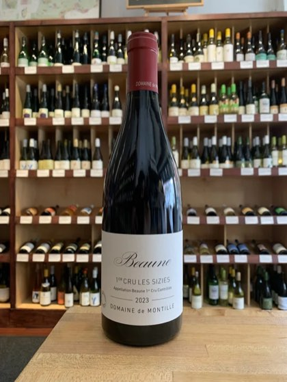
Red
Domain de Montille Beaune Les Sizies 2023
Burgundy, France
While the history of Montille dates back to the 1730’s it is the new generation under the careful stewardship of Etienne Hubert that has ushered in organic and biodynamic practices and a new purity to the prowess of the estate’s bottlings. “Les Sizies” is 100% Pinot Noir from a four acre plot on clay soils. Partial whole-cluster fermentation and aged 16 months in 20% new oak, this is elegant and approachable Burgundy with a medium bodied palate of violet and rose petal with black cherry, wild strawberry, and blackberry fruit notes. The oak is well integrated and the savory Pinot charm comes through on the long chalky finish. We love Les Sizies because despite its potential to age for over a decade it is always pleasant in its youth. A great gift that allows the person receiving to enjoy immediately or with adequate cellaring. Farmed biodynamically and fermented with native yeasts. Drink now through 2035.
Reserve List94 · La RVFOnly 4 left
$100
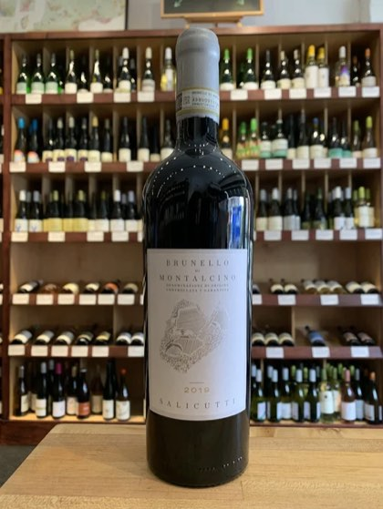
Red
Salicutti Brunello di Montalcino 2019
Tuscany, Italy
The Salicutti Brunello is sourced from the estate’s Teatro, Piaggione, and Sorgente vineyards. This is a stunning, lifted Sangiovese with aromas of spearmint, bay laurel, lilac, berries, and spice box leaping from the glass. The palate is suave with wild red currant, macerated raspberry, black cherry, forest bramble, orange peel, anise, and eucalyptus. Decant if drinking now or hold through 2040.
Reserve ListOnly 6 left
$100
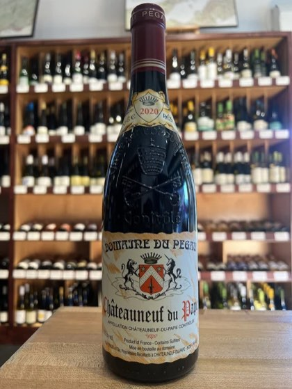
Red
Domaine Du Pegau Cuvee Reserve Chateauneuf Du Pape 2021
Chateauneuf De Pape, France
The Ferraud’s have been a vine growing family in this region since 1670, with titles to their earliest vineyards dating back to 1733. This is classic, old school CdP from a great vintage. The aromas are spicy and savory featuring notes of garrigue, violets, herbs de Provence, and smoked meat. The palate exudes layers of complexity with polished raspberry, cherry, and plum fruit flavors plus notes of leather, black pepper, and stones. There is a level of poise to this wine that will ensure it’s success in the cellar for many, many years to come. Keeping your paws off this puppy with be a challenge as it has so much to offer even in its youth. 80% Grenache, 6% Syrah, 4% Mourvèdre, 10% other varieties.
Reserve List95 · James SucklingOnly 2 left
$95
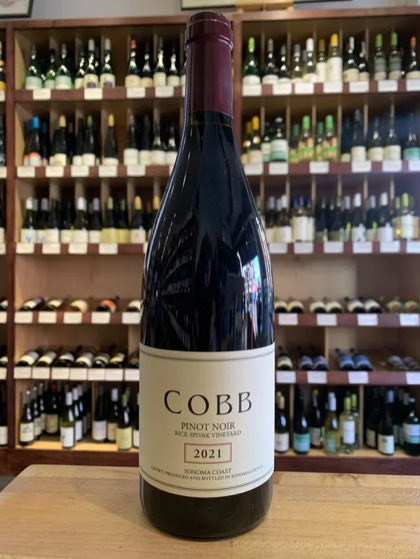
Red
Cobb Rice Spivak Vineyard Pinot Noir 2021
Sonoma Coast, United States
A beautiful Pinot from a 2 hectare single vineyard in the Sebastopol Hills of the Sonoma Coast. The vineyard is on volcanic ash soils, which impart excellent structure and minerality to this ageworthy offering. Dark cherry, fleshy strawberry, pomegranate, blood orange, forest floor, pipe tobacco, and potting soil hit your palate layer after layer. A wonderfully complex offering that should be drunk over the next decade plus. Only 375 cases made.
Reserve List96 · VinousOnly 4 left
$92
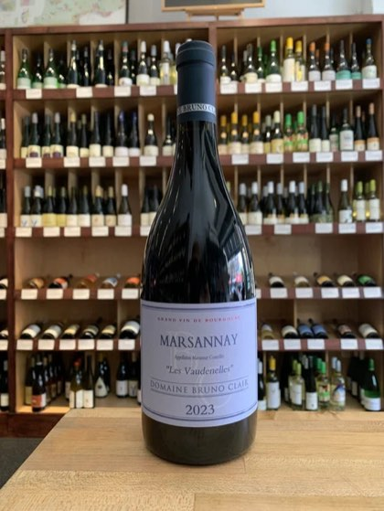
Red
Bruno Clair Les Vaudenelles Marsannay 2023
Burgundy, France
Bruno Clair is a sixth generation winemaker who began the eponymous estate in 1979. The majority of the estate’s focus is in Marsannay in the far north of the Cote de Nuits. “Les Vaudenelles” is a three acre, south facing site sitting at over 1,000 feet of elevation with 50+ year old vines. This wine sees 15% whole cluster fermentation and ages in 25% new French barrels for 18 months. Pouring a pretty purple in the glass the bouquet features dried rose petals, macerated cherries, gravel, and faint baking spice. The medium bodied palate is lifted and expressive with blood orange, black cherries, cranberries, wet earth, fresh minerality, and a faint meatiness. This has wonderful energy and crunchiness to it. Pair with pheasant or sautéed mushrooms. 90 – Tim Atkin 90 - Robert Parker’s Wine Advocate.
OrganicReserve List90 · Tim AtkinOnly 4 left
$90
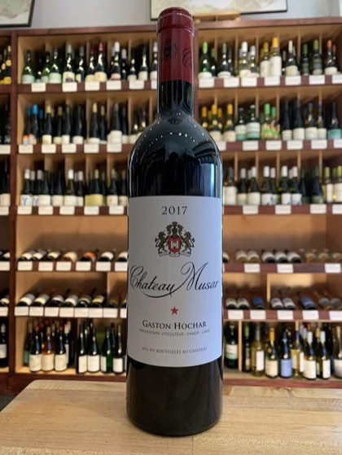
Red
Chateau Musar 2018
Bekaa Valley, Lebanon
The Middle East may not be the first place that pops into your head when thinking of wine but vine cultivation in the region dates back to the Phoenicians. Chateau Musar is no newcomer to the scene, having made fine wine just north of Beirut since 1930. This concentrated, structured blend of Cabernet, Cinsault, and Carignan demonstrates signature Musar with cassis, raspberry liqueur, black olives, smoke, barnyard, and rich earth. These wines aren’t for everyone but there’s no denying the introspection and investigation they demand in the glass. Vegan friendly.
Pairs with Rack of lamb, aged gruyere, just on its own
Reserve ListVeganOnly 1 left
$90
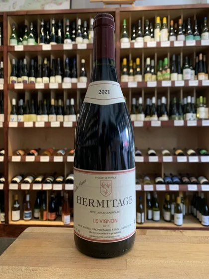
Red
Jean Michel Sorrel Hermitage Le Vignon 2021
Northern Rhone, France
100% Syrah sourced from three separate parcels in Hermitage: ‘Les Plantiers,’ ‘Les Greffieux,’ and ‘Les Bessards’. Winemaker Jean-Michel Sorrel, alongside brothers Jacques and Bruno, practice long-held Hermitage traditions: plowing by horse, picking grapes by hand, and using older barrels for aging (2 years in this case). This wine showcases aromas of black cherry, cinnamon, plum, and ripe blackberry. On the palate it is full-bodied and meaty, with notes of chocolate covered cherry, sandalwood, and cola. Great structure with grippy tannins that is bound to soften in the cellar over the next decade. This needs a good decant to unfurl in the glass. Pair with rack of lamb. 94 – Decanter
Reserve List94 · DecanterOnly 3 left
$90
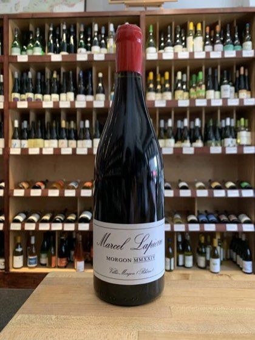
Red
Marcel Lapierre Cuvee Marcel Lapierre MMXXIV 2024
Beaujolais, France
A stunning and highly allocated wine from this storied, natural Beaujolais producer. 100% Gamay from the Cote du Py and Douby with vines over a century old. Only produced in the best vintages, this is exuberant right out of the gate with violet and rose petals, and a focused palate of macerated red berries and sleek minerality from the high granite content in the soils. This is so seductive and velvety with pure precision in the strawberry, raspberry flavors with a citrus top note. This is a wine with massive aging potential but is also known for being approachable in its youth. Biodynamic with no added sulfur. 93 – Vinous
NaturalReserve List93 · VinousOnly 1 left
$90
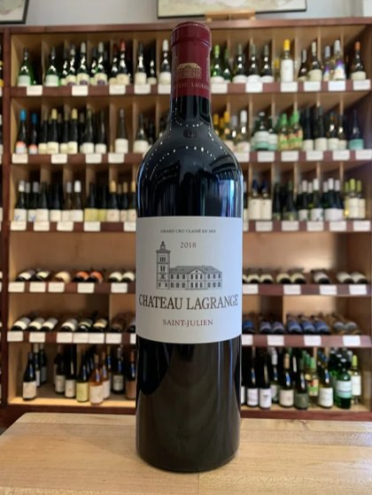
Red
Chateau Lagrange St. Julien 2014
Bordeaux, France
Sophisticated, elegant, refined, and finessed. This is a benchmark vintage from this marquee, third-growth, Bordeaux producer. Blackberry, cassis, citrus peel, tobacco leaf, espresso, and gravel all frame the silky and seamless foundation of this wine. Beautifully styled, this wine can be enjoyed now with ample time in a decanter but should age gracefully for another decade or more.
Pairs with Braised lamb shoulder, barbecue pulled pork, shepard’s pie
Reserve List94 · Wine EnthusiastOnly 1 left
$85
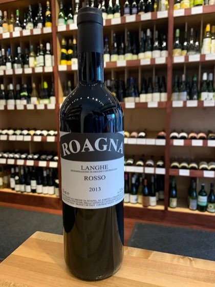
Red
Roagna Langhe Rosso 2020
Nebbiolo, Italy
Roagna create this bottling from what they consider “young vines” from two of Piedmont’s most prestigious vineyards, Paje (Barbaresco), and Pira (Barolo). Each is a storied site with ideal microclimates from Nebbiolo. Fermentation occurs with native yeast in large wooden casks. Extended maceration of 60 days is followed by a full five years in neutral barrel. Clearly, this is a bottle meant for a long decanting or years in the cellar. Medium-bodied and seamless with complex nuances of burnt orange peel, cherry compote, and barrel spice. The lengthy finish displays impressive tannins that will soften over the next decade.
Pairs with Black truffles, short rib ragu, veal milanese
From one of the oldest soleras in Jerez dating back to 1790! Named after the Capuchin monks living in Jerez, this VORS (Very Old Rare Sherry) is at least 60 years old, twice the guaranteed minimum to meet the category’s aging requirements. This is a 25 barrel solera with only 1.5% drawn from each barrel annually. Bright mahogany in color with an intense nose of incense, sandalwood, quince, hazelnut, and coffee. The palate is powerful and persistent with an incredible salinity from the limestone of the albariza soils. A rare gem of a Palo Cortado and a true treat for the tastebuds. 94 - Wine Advocate 94 - Decanter "Year’s Best Sherry” - Wine and Spirit Magazine
Pairs with Jamon iberico, sauteed mushrooms, game birds
Reserve List94 · Wine AdvocateOnly 2 left
$150
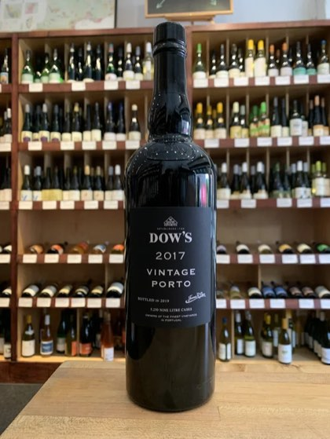
Fortified & Dessert
Dow's Vintage Port 2017
Douro Valley, Portugal
Following the incredibly exciting 2016 release, this 2017 Port reflects the renowned pedigree that has given Dow’s its legendary status in the world of wine. Comprised of mostly Touriga Nacional and Touriga Franca, this wine is incredibly complex, full-bodied, and aromatic. Although quite different than the 2016 vintage, many are already classifying it among the most legendary of Dow’s Port. The nose is intoxicating with blueberry cobbler, mocha, salted licorice, and tar notes swirling around the glass. On the palate, chocolate shavings, espresso bean, and blueberry puree provide balance, purity and depth. This wine is powerful and muscular, yet somehow manages a great deal of grace. While definitely entering the “Hall of Fame” of Dow’s, this delightful vintage could use 3-5 more years in the cellar to refine an even more exquisite finish and can be enjoyed through 2060 and beyond. A legendary fortified wine. 98 – James Suckling 96 – Wine Spectator 97 – Decanter 96 – Wine Enthusiast
Pairs with Candied pecans, chocolate cake, bleu cheeses
Reserve ListOnly 2 left
$105
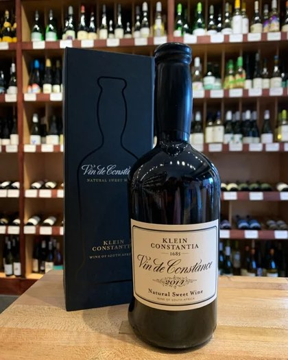
Fortified & Dessert · 500ml
Klein Constantia Vin de Constance 2019 500ml
Western Cape, South Africa
One of the most famed dessert wines in the world, Vin de Constance has been produced by the Klein Constantia estate since 1685! Don’t take our word for it, this wine was heralded by the likes of Napoleon Bonaparte, Charles Dickens, and Jane Austen. Made of 100% Muscat, the 2019 is just coming into its own with aromas of peach, apricot, orange marmalade, creme brulee, and candied ginger. The palate displays stunning notes of honeysuckle, caramel, dried mango, ripe orchard fruit, beeswax, and vanilla. This wine is known for its longevity and can age gracefully in your cellar for decades.
Pairs with Foie gras, blue cheese, mixed nuts
Reserve List98 · DecanterOnly 2 left
$100
Reserve List
Reserve List 2 bottles
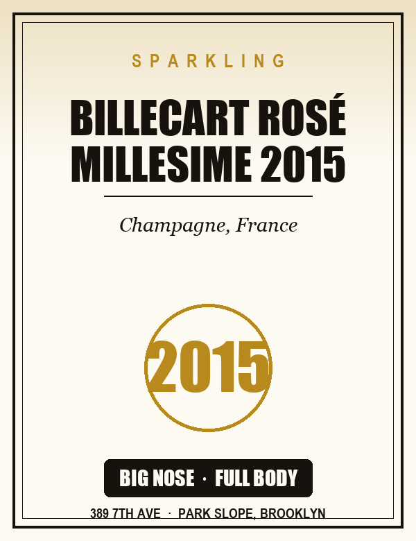
Reserve List
Billecart Rosé Millesime 2015
Champagne, France
The best vintage Champagne we've had from 2015 — blood orange, red currant, strawberry danish and a chalky streak of minerality. 100 months on the lees.
Reserve List95 · Wilfred Wong
$140In store only
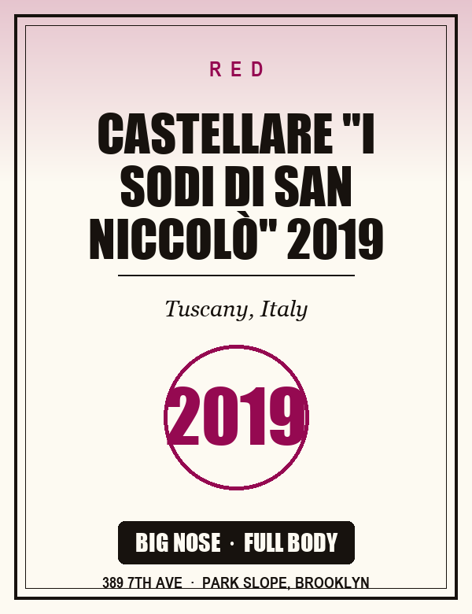
Reserve List
Castellare "I Sodi di San Niccolò" 2019
Tuscany, Italy
The Castellare flagship — Sangioveto with a touch of Malvasia Nera. Cherry compote, plum, camphor, garrigue and cigar box. Powerful; ages gracefully for 10–20 years.
The list rotates as bottles sell and new allocations land. Two of them are cellar-only — we keep them in the shop rather than the online store, so ask at the counter.